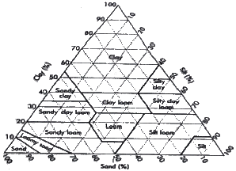
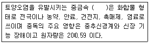
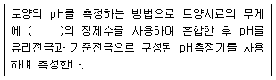
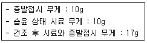
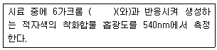
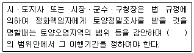

토양환경기사 (2015-09-19 기출문제)
1과목: 토양학개론
1. 지하수의 알칼리도에 관한 설명으로 틀린 것은?
- 알칼리도는 지하수의 pH가 7 이상이어야만 존재한다.
- 탄산염 및 중탄산염은 알칼리도에 영향을 미친다.
- 수화물이나 수산기가 물속에 들어 있을 때는 알칼리도에 영향을 미친다.
- 알칼리도 측정은 페놀프탈레인이나 메틸오렌지 등의 지시약을 사용한다.
(정답률: 81%)

2. 매집지의 기능을 대별하는 세 가지 기능이 아닌 것은?
- 저류기능
- 분해기능
- 차수기능
- 처리기능
(정답률: 68%)
3. 어느 지역의 토양을 입자분석 해보았더니 모래(sand) 50%, 미사(silt) 30%, 점토(clay) 20%로 이루어져 있다면 다음의 주어진 토양분류도에 의한 이 지역의 토양분류는?

- Clay
- Loam
- Clay loam
- Silty clay loam
(정답률: 80%)
4. 토양오염의 특징과 가장 거리가 먼 것은?
- 오염경로의 단순성
- 피해발현의 완만성
- 오염경향의 국지성
- 오염의 비인지성
(정답률: 82%)
5. 어떤 모래질 점토가 Kaolinite 30%, Montmorillonite 40%, 나머지는 모래로 구성되어 있다. Kaolinite 와 Montmorillonite의 양이온치환능(CEC)을 각각 10meq/100g, 100meq/100g 이라고 할 때, 이 흙의 양이온 치환능은? (단, 모래의 양이온 치환능은 무시)
- 34meq/100g
- 43meq/100g
- 54meq/100g
- 73meq/100g
(정답률: 80%)
6. 토양의 양이온교환용량이 35cmolc/kg이고, 그 중 H이온이 5.5cmolc/kg, Al이온이 3.9cmolc/kg 존재할 때 염기포화도(%)는?
- 58.2
- 64.5
- 73.1
- 80.5
(정답률: 76%)
7. 지하수에 이송되는 오염물질 평균속도를 darcy의 법칙에 의해 구하려고 한다. 다음과 같은 조건에서 오염물질의 평균속도는? (단, 투수계수 2cm/sec, 수두차 10cm, 시료길이 20cm)
- 1cm/sec
- 3cm/sec
- 4cm/sec
- 5cm/sec
(정답률: 60%)
8. ( )안에 들어갈 중금속으로 가장 적당한 것은?

- 카드뮴
- 비소
- 납
- 수은
(정답률: 80%)
9. 전지구적인 물 분포 부피비를 크기 순서대로 나열한 것은?
- 빙하, 만년설＞지하수(지하 약 4km)＞강＞토양수분
- 지하수(지하 약 4km)＞빙하, 만년설＞토양수분＞강
- 지하수(지하 약 4km)＞빙하, 만년설＞강＞토양수분
- 빙하, 만년설＞지하수(지하 약 4km)＞토양수분＞강
(정답률: 84%)
10. 신화상태이던 토양의 조건이 바뀌어 환원상태가 되면 토양 내 여러 물질의 환원이 진행된다. NO3, MnO2, Fe(OH)3, SO22- 네 물질이 존재할 때 이들 물질의 환원되는 순서를 바르게 나타낸 것은?
- NO3→MnO2→Fe(OH)3→SO42-
- MnO2→SO42-→NO3-→Fe(OH)3
- Fe(OH)3→NO3→MnO2→SO42-
- SO42-→NO3→Fe(OH)3→MnO2
(정답률: 56%)
11. 바람에 실린 토양입자들이 크기에 따라 이용하는 경로에 관한 설명으로 옳지 않은 것은?
- 약동이란 대개 바람에 의하여 지름 0.1~0.5mm의 토양입자가 지표면에 30cm 이하의 높이로 비교적 짧은 거리를 구르거나 뛰는 모양으로 이동하는 것이다.
- 포행은 큰 토양입자가 토양표면을 구르거나 미끄러지며 이동하는 것이다.
- 부유는 먼지 전체 이동량의 90% 이상으로 대부분을 차지한다.
- 약동에 의하여 움직이는 토양입자는 포행하는 입자를 때리거나 포행의 움직임을 더욱 빠르게 하는 역할을 한다.
(정답률: 78%)
12. 어떤 유기용제 25L가 토양으로 유출되었다. 이로 인해 발생된 오염 지하수의 부피는 200m3이었고 지하수 내 유기용제의 농도는 90mg/L이었다. 유기용제의 밀도가 0.9g/mL일 때 토양 내 잔존하는 유기용제의 양(L)은? (단, 유기용제의 분해는 고려하지 않음)
- 2
- 3
- 4
- 5
(정답률: 47%)
13. 토양을 분석한 결과 pH 6.0, 점토 95%, 부식 5%일 때, 토양의 CEC를 추정하면? (단, 점토와 부식의 CEC가 각각 10cmalc/kg, 100cmalc/kg이라고 가정하며 나머지는 고려하지 않음)
- 12.5cmalc/kg
- 14.5cmalc/kg
- 16.5cmalc/kg
- 18.5cmalc/kg
(정답률: 75%)
14. 어느 지역의 토양공극률이 0.42이며 토양입자밀도는 2.65g/cm3로 알려져 있다. 이 지역 토양단위용적밀도는?
- 12.4g/cm3
- 1.54g/cm3
- 1.72g/cm3
- 1.83g/cm3
(정답률: 81%)
15. 토양수의 이동에 관한 설명으로 틀린 것은?
- 토양 중 물이 하향방향으로 이동하는 데 방해하는 힘은 토양 입자 표면의 마찰력과 토양 공기의 저항력 및 물의 표면장력이다.
- 공극이 작으면 틈이 작고 마찰에 의한 저항이 작기 때문에 충분한 압력을 가하지 않는 한 하강운동은 크게 억제된다.
- 토양수의 하강 정도는 물의 점성계수, 토양성질, 지하수위 등에 따라 매우 달라지며 이러한 성질을 투수성이라 한다.
- 토양 수분의 증발량은 기온의 제곱에 비례하며 상대습도에 비례하고 기압에 반비례한다.
(정답률: 66%)
16. 소성지수는 토양의 액성한계와 소성한계의 차를 나타내는 지수이다. 점토함량이 같은 경우 소성지수가 큰 순서대로 바르게 나열된 것은?
- 카올리나이트 ＞ 할로이사이트 ＞ 일라이트 ＞ 몬모릴로나이트
- 몬모릴로나이트 ＞ 일라이트 ＞ 카올리나이트 ＞ 할로이사이트
- 몬모릴로나이트 ＞ 일라이트 ＞ 할로이사이트 ＞ 카올리나이트
- 카올리나이트 ＞ 할로이사이트 ＞ 몬모릴로나이트 ＞ 일라이트
(정답률: 77%)
17. 관계용수의 나트륨흡착비가 7.5이고, Ca2+과 Mg2+이 각각 65mg/L와 92mg/L일 때, Na+의 농도(mg/L)는?
- 약 17.6
- 약 66.5
- 약 403.7
- 약 1528.4
(정답률: 30%)
18. 오염물 확산 및 처리에 중대한 영향을 미치는 오염지역의 토양 특성으로 가장 거리가 먼 것은?
- 토양 내 유기물질 함량
- 토양의 함수율
- 토양의 pH 및 알칼리도
- 토양의 헨라(공기/물 투수계수)지수
(정답률: 40%)
19. 다음 토양 성분 중 일반적으로 단위질량당 표면적이 가장 큰 것은?
- 굵은 모래(coarse sand)
- 자갈(gravel)
- 미사(silt)
- 점토(clay)
(정답률: 83%)
20. 토양 및 지하수내 질삼염과 질소에 관한 내용으로 틀린 것은?
- 질산염 농도가 높은 물은 영유아에게 청색증(blue baby syndrome)을 유발 할 수 있다.
- 질산염은 탄산염과 같이 물을 끓여 제거할 수 있다.
- 토양 및 지하수계 내에서 질소 원소는 미생물에 의해 산화, 환원반응을 한다.
- 지하수환경 내에서 NO2의 함량은 소량이다.
(정답률: 71%)
2과목: 토양 및 지하수 오염조사기술
21. pH 측정법에 관한 설명으로 가장 거리가 먼 것은?
- 조제한 분석용 시료 5g에 증류수 25mL를 넣는다.
- 유리전극 및 표준전극을 넣고 60초 이내에 읽는다.
- 토양 현탄액이 모두 가라 않은 후 상등액에 전극을 넣어 측정한다.
- 토양을 오랫동안 방치하면 미생물이 작용으로 pH가 낮아질 수 있다.
(정답률: 80%)
22. 유도결함플라즈마-원자발광분광계에 대한 설명으로 가장 거리가 먼 것은?
- 질소가스를 플라즈마 가스로 사용한다.
- 분석장치는 시료도입부, 고주파전원부, 광원부, 분광부, 연산처리부 및 기록부로 구성된다.
- 분광부는 검출 및 측정에 따라 연속주사형 단원소측정장치와 다원소등시측정장치로 구분
- ICP의 토치는 3중으로 된 석영관이 이용된다.
(정답률: 72%)
23. 흡광광도법에서 투과도가 0.4일 때 흡광도는?
- 약 0.2
- 약 0.4
- 약 0.6
- 약 0.8
(정답률: 82%)
24. 가스크로마토그래프법으로 유기인을 정량시 사용되는 정제용 컬럼과 가장 거리가 먼 것은?
- 실리카겔 컬럼
- 플로리실 컬럼
- 황성알루미나 컬럼
- 활성탄 걸럼
(정답률: 72%)
25. 유기전극법을 사용한 수소이온농도 측정에 관한 설명으로 ( )에 알맞은 것은?

- 3배
- 5배
- 10배
- 20배
(정답률: 76%)
26. 불소 분석 방법에 관한 설명으로 가장 거리가 먼 것은? (단, 자외선/가시선 분광법 기준)
- 다량의 염소이온이 함유되어 있으면 과량의 Ag+이온을 첨가한다.
- 정량한계는 0.⑤mg/kg이다.
- 불소이온과 지르코니움(zirconium)이온 사이의 반응속도는 반응혼합물의 산도에 따라 달라진다.
- 불소가 진홍색의 지르코니움(zirconium)-발생시 약과의 반응으로 무색의 음이온 복합체 (ZrF62-)를 형성한다.
(정답률: 73%)
27. 토양오염관리대상시설 지역 중 시료 채취 및 보관방법에 관한 설명으로 가장 거리가 먼 것은?
- 토양시료는 직경 2.0cm 이하의 시료 채취봉이 들어 있는 토양시추장비로 채취한다.
- 시료채취 봉을 꺼내어 오염의 개연성이 가장 높다고 판단되는 부위 ±15cm를 시료부위로 한다.
- 토양시추장비는 시추 중에 물이나 기름이 유입되지 않는 것이어야 한다.
- 토양시추장비는 시료 채취봉이 들어있는 타격식이나 나선형식이 있다.
(정답률: 85%)
28. 원자흡수분광광도법으로 니켈을 측정할 때 정밀도(% RSD) 기준은?
- 10% 이내
- 20% 이내
- 25% 이내
- 30% 이내
(정답률: 76%)
29. 비소-수소화물생성-원자흡수분광광도법에 관한 설명으로 가장 거리가 먼 것은?
- 토양 중 비소의 정량한계는 0.10mg/kg이다.
- 원자흡수분광광도계에 불꽃을 만들기 위한 가연성가스로 아세틸렌, 조연성가스로 공기를 사용한다.
- 원자흡수분광광도계에 사용하는 광원으로 좁은 선폭과 높은 휘도를 갖는 스펙트럼을 방사하는 비소속반음극 램프를 사용한다.
- 비호수소를 원자화시켜 258nm에서 수소화물생성-원자흡수분광광도법에 따라 정량한다.
(정답률: 45%)
30. 원자흡수분광광도계에 사용하는 광원은?
- 텅스텐램프
- 중수소방전관
- 속빈음극램프
- 광전분광램프
(정답률: 89%)
31. 황산용액(1→1000)으로 표시된 수용액은 몇 ppm (W/V)인가? (단, 순수한 황산의 비중은 1.84이다.)
- 1.84
- 18.4
- 184
- 1840
(정답률: 69%)
32. 자외선/가시선분광법을 이용하여 시안의 농도를 측정 시, 방해물질이 함유되어 있을 경우 전처리를 하여야 한다. 이 때 방해물질병 전처리 방법이 틀린 것은?
- 다량의 지방성분 함유시료 : 아세트산 또는 수산화나트륨 용액으로 pH6~pH7로 조정하고 시료의 약 2%에 해당되는 부피의 노말헥산 또는 클로로포름을 넣어 추출하여 유기층은 버리고 수층을 분리하여 사용한다.
- 잔류염소 함유시료 : 잔류염소 20mg당 L-이스코르빈산(10%) 0.6mL를 넣어 제거한다.
- 잔류염소 함유시료 : 잔류염소 20mg당 아비산나트륨용액10%) 0.7mL를 넣어 제거한다.
- 황화합물 함유시료 : 질산나트륨(10%) 2mL을 넣어 제거한다.
(정답률: 61%)
33. 센티스트로크(cSt)는 무엇의 계량 단위인가?
- 비표면적
- 점도
- 비중
- 표준도
(정답률: 60%)
34. 저장물질이 있는 누출검사대상시설의 기상부 누출검사 방법인 미가입시험법의 판정기준으로 맞는 것은?
- 측정한 누출검사대상시설내의 압력강하량이 1mmH2O를 초과한 경우에는 불합격으로 한다.
- 측정한 누출검사대상시설내의 압력강하량이 2mmH2O를 초과한 경우에는 불합격으로 한다.
- 측정한 누출검사대상시설내의 압력강하량이 3mmH2O를 초과한 경우에는 불합격으로 한다.
- 측정한 누출검사대상시설내의 압력강하량이 6mmH2O를 초과한 경우에는 불합격으로 한다.
(정답률: 80%)
35. 임의의 시료에 대해 수분(%)측정 실험 중 다음과 같은 결과를 얻었을 때 시료의 수분(%)은?

- 40%
- 30%
- 20%
- 15%
(정답률: 85%)
36. 토양정밀조사결과를 오염등급에 따라 4등급(Ⅰ, Ⅱ, Ⅲ, Ⅳ)구분하는 경우, ‘토양오염대책기준 초과지역‘의 등급기준을 나타내는 색은?
- 빨간색
- 청색
- 노란색
- 검정색
(정답률: 84%)
37. 6가크롬(자외선/가시선 분광법) 분석에 관한 설명으로 ( )에 알맞은 것은?

- 아연분말
- 디페닐카르바지드
- 피리단-피라졸론
- 염화제일주석
(정답률: 86%)
38. 토양정밀조사 절차 단계와 가장 거리가 먼 것은?
- 기초조사
- 지역조사
- 개황조사
- 정밀조사
(정답률: 86%)
39. 다음 용어에 대한 정의로 틀린 것은?
- “진공”이라 함은 따로 규정이 없는 한 15mmH2O 이하를 말한다.
- “약”이라 함은 기재된 양에 대하여 ±10% 이상의 차가 있어서는 안된다.
- “정확히 취하여”라 하는 것은 규정한 양이 검체 또는 시액을 홀피펫으로 눈금까지 취하는 것을 말한다.
- “밀페용기”라 함은 취급 또는 저장하는 동안에 이물질이 들어가거나 또는 내용물이 손실되지 아니하도록 보호하는 용기를 말한다.
(정답률: 75%)
40. 가압시험법 측정오류의 원인으로 가장 거리가 먼 것은?
- 최저 설정압력의 오류
- 시험압력 유지시간이 너무 짧을 때
- 연결관 및 연결부의 오류로 인한 누출
- 측정기간 중 과도한 온도변화에 의한 내용물의 체적 변화
(정답률: 76%)
3과목: 토양 및 지하수 오염정화 기술
41. 양수처리방법으로 오염지하수를 정화하고자 한다. 오염운을 함유하고 있는 대수층 부피는 10000m3이며 공극률은 0.45이다. 양수펌프의 용량이 500liter/hr일 경우 오염운을 양수하는 데 필요한 시간은?
- 450 hr
- 1000 hr
- 4500 hr
- 9000 hr
(정답률: 66%)
42. 수직차단벽으로서의 슬러리월(slurry walls)의 역할이 아닌 것은?
- 오염물질의 분해 또는 지체 효과를 증진시킨다.
- 오염물질을 고형화하여 용출율을 낮춘다.
- 지하로의 침출수 흐름을 제어한다.
- 오염되지 않은 지하수를 오염된 지역으로부터 격리시킨다.
(정답률: 75%)
43. 지하저장탱크에서 톨루앤이 누출되어 부지조사결과 탱크주변의 오염된 도야의 부피가 110m3이고 평균 톨루엔의 농도가 2000mg/kg이라면 해당부지에 오염된 톨루엔의 총 함량은? (단, 토양 bulk density는 1.5g/cm3임)
- 330 kg
- 447 kg
- 584 kg
- 640 kg
(정답률: 76%)
44. 토양복원기술 중 원위치(in-situ) 정화기술과 가장 거리가 먼 것은?
- 토양증기추출법(Soil Vapor Extraction)
- 생분해법(Biodegradation)
- 유리화(Vitrification)
- 토지경작법(Landfarming)
(정답률: 69%)
45. 동전기정화기술에서 포화된 지중 내에 전걱을 삽입하고 직류 전원을 연결하였을 때 양극(+)에서 발생되는 반응식으로 가장 옳은 것은?
- 2H2O+2e-→H2↑+2OH-
- 2H2O+2e-→O2↑+4H+
- 2H2O-4e-→H2↑+4H+
- 2H2O-2e-→O2↑+2OH-
(정답률: 62%)
46. 오염지역의 지하수 수두구배 0.003, 수리전도도 10-5cm/sec, 지하수의 지표하 10미터, 지하수 유입단면적 300m2일 때, 오염플럼으로 유입되는 지하수의 유입 유량(L/min)은?
- 5.4×10-2
- 5.4×10-3
- 5.4×10-4
- 5.4×10-5
(정답률: 56%)
47. 오염토양 내에 인위적으로 산소를 공급하여 토양 내에 존재하는 토착 미생물의 활성을 촉진시켜 생분해도를 극대화하여 오염토양을 정화하는 기법은?
- 공기분사기법(air sparging)
- 토양증기추출기법(soil vapor extraction)
- 토양세척(soil washing)
- 바이오벤팅기법(biovention)
(정답률: 82%)
48. 오염토양에 대한 열처리 공정선정을 위한 고려사항과 거리가 먼 것은?
- 처리효율
- 법적 기준의 달성
- 주변 매립지 유무
- 단기영향
(정답률: 67%)
49. 유기오염 물질의 휘발성이 낮아지는 순서로 나열된 것은? (단, 휘발성 높음＞휘발성 낮음)
- PCB＞석유탄화수소＞PAH
- 휘발성 염화유기용매＞PCB＞BTEX
- PAH＞BTEX＞PCB
- BTEX＞석유탄화수소＞PCB
(정답률: 79%)
50. 토양증기추출법의 적용 시 배출가스 제어시스템(배출가스 정화 : 활성탄을 이용하여 휘발성 오염물 흡착 기준)에 대한 설명 중 틀린 것은?
- 최적조건에서 98% 이상의 제거효율을 나타낸다.
- 보통 오염농도가 1000ppm 이상일 때 효과적이다.
- 흡착조에 유입되는 배기가스의 습도가 상대습도로 50% 이상일 때는 사전에 습도를 낮추어 준다.
- 흡착조 유입가스의 온도가 높을 때는 열교환기를 설치하여 냉각시켜준다.
(정답률: 48%)
51. 대체로 500℃ 이하의 토양온도 조건에서 오염물질을 토양으로부터 제거하는 기술인 열탈착기술에 관한 설명으로 가장 거리가 먼 것은?
- 토양으로부터 검출한계 이하까지 유기염소 및 유기인 살충제의 제거가 가능하다.
- 다양한 수분 함량과 오염농도를 가진 여러 종류의 토양에 적용이 가능하다.
- 토양으로부터 검출한계 이하로 휘발성 유기화합물의 제거가 가능하다.
- 처리하는 동안에 다이옥신과 푸란이 생성되는 단점이 있다.
(정답률: 81%)
52. 고온 열탈착 공법(HTTD)에 관한 내용과 가장 거리가 먼 것은?
- 큰 입경의 토양을 장기적으로 운전하면 시설을 손상시킬 수 있다.
- 점토, 휴민산을 많이 함유한 토양은 오염물질과 단단히 결합되어 반응시간이 길어진다.
- 적절한 토양함수비를 맞추기 위한 가수분해과정이 필요하다.
- 방사능물질이나 독성물질로 오염된 토양으로부터 오염물질을 분리하는 데 적용할 수 있다.
(정답률: 61%)
53. 바이오파일(Biophiles) 및 토양경작(Landfarming)에 관한 설명으로 틀린 것은?
- 토양경작은 바이오파일과 오염물질 제거기간이 동일하다.
- 바이오파일과 토양경작 시스템 구성에 있어서 차이는 토양 높이, 공기접촉방시에 있다.
- 토양경작은 오염토양을 굴착하여 2~3m 정도 더미를 만들어 일정하게 뒤집어 준다.
- 바이오파일 및 토양경작은 유류오염 정화에 주로 적용된다.
(정답률: 64%)
54. 토양세척공정에 관한 내용으로 옳은 것은?
- 외부환경의 조건변화에 대한 영향이 큰 공정이다.
- 처리 효율은 높으나 적용 가능한 오염물의 범위가 좁다.
- 자체적인 조건조절이 가능한 폐쇄형 공정이다.
- 오염토양의 부피감소 시간이 길다.
(정답률: 66%)
55. 다음 중 미생물에 의한 호흡과정에서 같은 양이 사용되는 경우 진자수용체로서 가장효율이 높은 물질은?
- 과산화수소
- 공기로 포화된 물
- 산소로 포화된 물
- 질산염이 다량 함유된 물
(정답률: 62%)
56. Biosparging 복원기술에 대한 설명 중 틀린 것은?
- 공기를 지하수면 아래에 주입하여 휘발성 유기오염물질을 불포화 토양층으로 이동시켜 생분해시킨다.
- 지층의 구조가 불균질인 경우 특히 층상구조를 이룰 때 유리하다.
- 수리전도도가 너무 크면 오염물질 확산의 우려가 있다.
- 불포화 토양층 내에서의 유량은 충분한 체류시간을 갖도록 해야 한다.
(정답률: 75%)
57. 다음 토양세척장치 종류 중 교반 세척방식에 해당되는 정치의 형태는?
- 진동체형
- 유동상형
- 회전드럼형
- 스크루형
(정답률: 84%)
58. 중금속 오염토양의 정화대책과 관련된 내용으로 가장 거리가 먼 것은?
- 양치식물은 카드뮴을 잘 흡수하는 것으로 알려져 있다.
- 해바라기는 납을 잘 흡수하는 것으로 알려져 있다.
- 석회질 자제를 투여하여 pH를 낮추면 Cu, Cd, Zn, Mn, Fe 등은 수산화물로 침전된다.
- 인산 자제를 투여하면 Cr, Cb, Zn, Cd, Fe, Mn 등과 반응하여 난용성 인산염을 생성한다.
(정답률: 71%)
59. 토양수분 내 벤젠농도 5mg/L이 토양공극내 공기화 평형 관계에 있는 오염상태에 SVE 공정을 적용하고자 한다. 토양 공기 내 벤젠의 농도(mg/m3)는? (단, 헨리법칙 적용, 벤젠의 부차원 헨리상수=0.231)
- 1⑤5
- 1155
- 1255
- 1355
(정답률: 66%)
60. 전기동력학적 오염토양 복원기술이 타 기술과 비교하여 갖는 장점으로 가장 거리가 먼 것은?
- 수리전도도가 낮고 표면반응성이 큰 점토와 같은 세립질 토양에도 적용될 수 있다.
- 무기오염물질과 유기오염물질을 모두 제거할 수 있다.
- 전기장의 방향을 조절함으로써 토양 내 공극유체와 오염물질들의 이동방향을 조절할 수 있다.
- 공정 중 발생하는 침전물의 전하로 전기저항이 줄어 공정효율이 향상될 수 있다.
(정답률: 72%)
4과목: 토양 및 지하수 환경관계법규
61. 지하수법에서 정의한 용어의 설명으로 틀린 것은?
- “지하수”는 지하의 지층이나 암석사이의 빈틈을 채우고 있거나 흐르는 물을 말한다.
- “지하수영향조사”라 함은 지하수가 사람의 보건 및 안전에 미치는 영향을 분석하는 조사를 말한다.
- “지하수보전구역”은 지하수의 수량이나 수질을 보존하기 위하여 필요한 구역으로서 지정된 구역을 말한다.
- “지하수개발ㆍ이용시공업”은 지하수 개발ㆍ이용을 위한 시설을 시공하는 사업을 말한다.
(정답률: 60%)
62. 토양보전대책계획의 수립에서 반드시 포함되지 않아도 되는 사항은?
- 오염토양개선사업의 종류 및 방법
- 단위사업별 주체 및 사업기관
- 단위사업별 참여 기술인력의 구성
- 총소요비용 및 조달방안
(정답률: 64%)
63. 다음 중 토양오염도검사수수료가 가장 비싼 항목은?
- 카드뮴
- 유기인
- 수은
- 불소
(정답률: 69%)
64. 토양보전기본계획에 포함되어야 하는 사항으로 가장 거리가 먼 것은?
- 토양정화를 위한 기술인력의 교육 및 양성에 관한 사항
- 토양정화와 관련된 기술의 개발 및 관련 산업의 육성에 관한 사항
- 토양보전에 관한 시책방향
- 토양보전 지역 지정기준 및 활용 방안에 관한 사항
(정답률: 61%)
65. 토양정밀 조사명령에 관한 내용으로 ( )에 알맞은 것은?

- 1월
- 2월
- 3월
- 6월
(정답률: 72%)
66. 토양오염의 원인이 되는 물질로서 환경부령으로 정하는 토양오염물질 항목이 아닌 것은?
- 니켈 및 그 화합물
- 유류(동, 식물성 제외)
- 망간 및 그 화합물
- 시안화합물
(정답률: 36%)
67. 기술인력의 교육에 대한 기준으로 옳은 것은? (단, 보수교육 기준)
- 신규교육을 받은 날을 기준으로 3년마다 8시간
- 신규교육을 받은 날을 기준으로 3년마다 24시간
- 신규교육을 받은 날을 기준으로 5년마다 8시간
- 신규교육을 받은 날을 기준으로 3년마다 24시간
(정답률: 88%)
68. 토양보전대책지역 지정에서 농경지의 경우 지표면으로부터 어느 정도까지의 토양오염도가 대체기준을 초과하면 대책지역 지정을 요청 할 수 있는가?
- 10cm
- 20cm
- 30cm
- 40cm
(정답률: 82%)
69. 지하수오염관측정 설치에서 지하수오염유발시설의 경계선에서 지하수 주 흐름의 하류지점에 설치하는 관측정의 수는 얼마인가? (단, 특정토영오염관리대상시설에 한함)
- 1개
- 2개
- 3개
- 4개
(정답률: 70%)
70. 시장ㆍ군수ㆍ구청장은 토양보전대택지역에 대하여는 대책계획을 수립하여 관할 시ㆍ도지사와의 협의를 거친 후 환경부장관의 승인을 얻어 시행하여야 하는데 이 대책계획에 포함되는 사항과 가장 거리가 먼 것은?
- 오염토양 개선사업
- 토양정화의 검증
- 토지 등의 이용방안
- 주민건강 피해조사 및 대책
(정답률: 67%)
71. 지하수정을 굴착하여 수질을 측정하였더니 질산성질소가 16mg/L로 나타났다. 질산성질소 농도만을 고려할 경우에 이 지역의 지하수는 어떤 용도로 사용이 가능한가? (단, 지하수를 공업용수, 농업용수, 어업용수, 생활용수로 사용하려 함)
- 공업용수로만 사용이 가능하다.
- 공업용수, 농업용수로만 사용이 가능하다.
- 공업용수, 어업용수로만 사용이 가능하다.
- 생활용수, 농업용수, 어업용수, 공업용수로 모두 사용이 가능하다.
(정답률: 66%)
72. 지하수 수질기준 중 지하수를 생활용수 이용하는 경우 수소이온농도(pH)기준은?
- 3.5~4.5
- 4.5~6.5
- 5.8~8.5
- 7.8~10.5
(정답률: 86%)
73. 지하수에 함유된 오염물질을 제거ㆍ분해 또는 희석하여 지하수의 수질개선을 하는 사업은?
- 토양정화업
- 지하수영향조사업
- 지하수개발ㆍ이용시공업
- 지하수정화업
(정답률: 84%)
74. 특정토양오염관리대상시설에서 정기 토양오염도검사를 받는 것 외에 별도로 토양관련전문기관으로 토양오염검사를 받아야 하는 경우가 아닌 것은?
- 시설의사용을 종료하거나 페쇄할 경우
- 양도ㆍ임대 등으로 인하여 운영자가 달라지는 경우
- 시설에 저장하는 토양오염물질의 종류를 변경하고자 할 경우
- 토양오염검사항목을 변경하였을 경우
(정답률: 38%)
75. 특정토양오염관리대상시설의 설치신고를 하고자 하는 자는 특정토양오염유발시설 설치신고서를 누구에게 제출해야 하는가?
- 특별자치도지사, 시장, 군수, 구청장
- 환경부장관
- 국립환경연구원장
- 시ㆍ도 보건환경연구원
(정답률: 67%)
76. 토양관련전문기관인 누출검사기관의 지정기준(장비)으로 가장 거리가 먼 것은?
- 연기발생ㆍ측정기(smoker)
- 초음파두께 측정기(100분의 1밀리리터 이상의 정밀도를 갖는 것)
- 가연성가스농도측정기
- 산소농도측정기
(정답률: 64%)
77. 지하수에 관한 조사업무를 대행할 수 있는 지하수 관련조사전문기관으로 가장 거리가 먼 것은?
- 「한국수자원공사법」에 따른 한국수자원공사
- 「한국광물자원공사법」에 따른 한국광물자원공사
- 「한국기술개발 및 지원에 관한 법률」에 의한 한국환경산업기술원
- 「한국환경공단법」에 따른 한국환경공단
(정답률: 80%)
78. 표토의 침식현황 및 정도에 대한 조사를 하는 경우에는 모니터링, 자료조사 및 침식량 산정 등의 방법으로 실시해야 한다. 해당 조사에 포함해야 하는 사항과 가장 거리가 먼 것은?
- 토성, 용적밀도, 유기물 함량, 토양구조, 투수등급
- 강우특성
- 지하수 수위
- 토지 이용 현황
(정답률: 56%)
79. 지하수를 생활용수로 이용하는 경우에 있어서 적용되는 수질기준 항목 중에서 일반오염 물질이 아닌 항목은?
- 수소이온농도(pH)
- 질산성질소
- 부유물질
- 염소이온
(정답률: 70%)
80. 속임수나 그 밖의 부정한 방법으로 토양관련 전문기관의 지정을 받거나 토양정화업의 등록을 한 자에 대한 벌칙기준은?
- 1년 이하의 징역 또는 1천만원 이하의 벌금
- 2년 이하의 징역 또는 2천만원 이하의 벌금
- 3년 이하의 징역 또는 5천만원 이하의 벌금
- 1천만원 이하의 과태료
(정답률: 80%)